P-MUT-01 · Beyaz L Mutfak, Işıklı Vitrin
Müşteriden gelen gerçek çekim · 2040×1425 px
Doğrudan çekim: beyaz köşe mutfak, siyah kulplar, sarı tezgâh ışığı ve üstte cam vitrin. Alt telefon/tarih damgası kırpıldı.

P-MUT-02 · Beyaz L Mutfak
Müşteriden gelen gerçek çekim · 2048×1430 px
Doğrudan çekim: beyaz L mutfak, siyah çerçeveli üst camlar, gri tezgâh ve sağda buzdolabı. Alt telefon/tarih damgası kırpıldı.

P-MUT-04 · Beyaz U Mutfak
Müşteriden gelen gerçek çekim · 1600×1200 px
Doğrudan çekim: beyaz U mutfak, gri tezgâh ve mermer görünümlü zemin; sıcak asma tavan ışığı. Geniş açı.

P-MUT-05 · Beyaz U Mutfak, Pencere Cephesi
Müşteriden gelen gerçek çekim · 1200×1600 px
Aynı beyaz U mutfağın pencereye bakan dikey açısı; tavan ve zemin birlikte görünüyor.
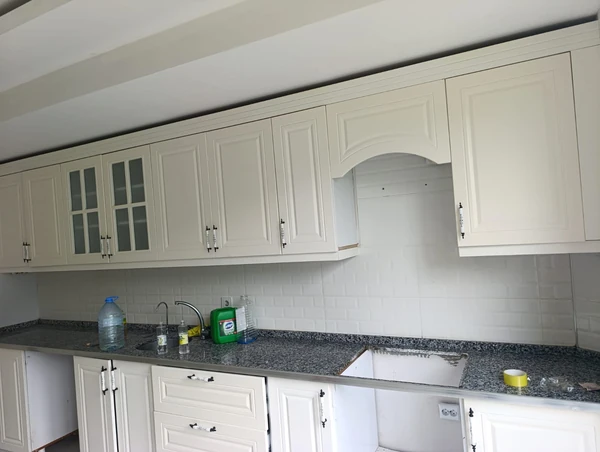
P-MUT-06 · Beyaz Country Mutfak
Müşteriden gelen gerçek çekim · 1600×1204 px
Doğrudan çekim: beyaz country mutfak, cam kapaklı üst dolaplar, kemerli davlumbaz bölümü ve koyu tezgâh.
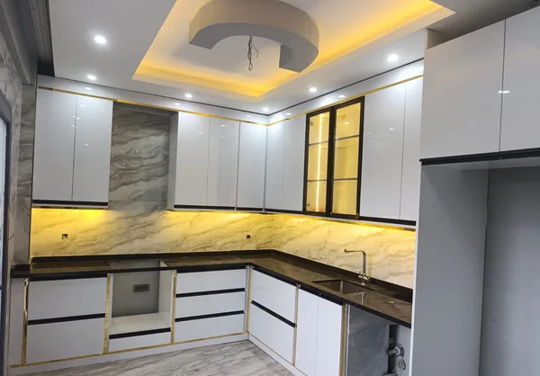
P-MUT-07 · Beyaz U Mutfak, Işıklı Tavan
Müşteriden gelen gerçek çekim · 1600×1115 px
Beyaz kapaklar, koyu tezgâh, ışıklı asma tavan ve camlı üst dolap.
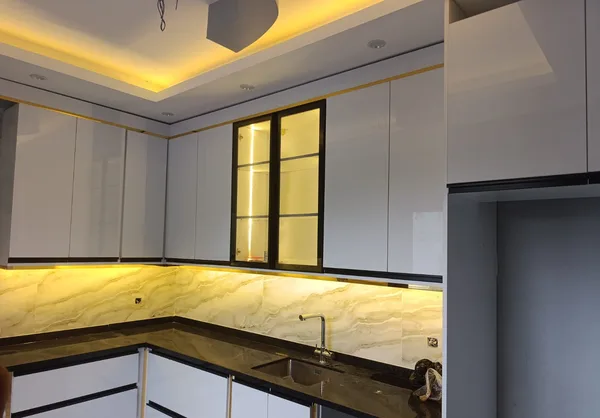
P-MUT-08 · Mermer Desenli Tezgâh Arası
Müşteriden gelen gerçek çekim · 1600×1115 px
Beyaz dolaplar, mermer desenli tezgâh arası ve sıcak LED aydınlatma.

R-MUT-01 · Gri U Mutfak
Model referansı · 1792×2400 px
Ortada pencere, siyah tezgâh, açık gri düz dolaplar ve U yerleşim; tavanda dikdörtgen LED çizgisi. Dikey model referansı.

R-MUT-02 · Pudra Düz Kapaklı Mutfak
Model referansı · 2560×1441 px
Pudra/krem düz üst ve alt dolaplar, mermer desenli arka yüzey ve yüksek ankastre kolonu; geniş yatay kompozisyon.
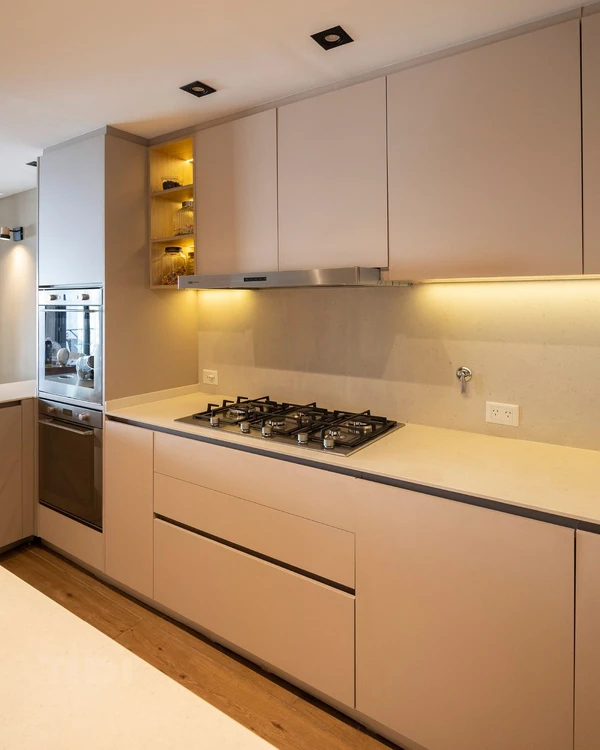
R-MUT-03 · Bej Kulpsuz Mutfak
Model referansı · 1440×1800 px
Bej düz dolaplar, uzun yatay tutamak çizgileri, gazlı ocak ve yüksek ankastre kolonu; sıcak ışıklı tezgâh yakın açısı.

R-MUT-04 · Gri Mutfak, Siyah Cam Dolap
Model referansı · 1200×1600 px
Gri çekmeceler, açık mermer tezgâh/arka panel, siyah batarya ve yansıtıcı siyah cam üst dolaplar; yakın açı.
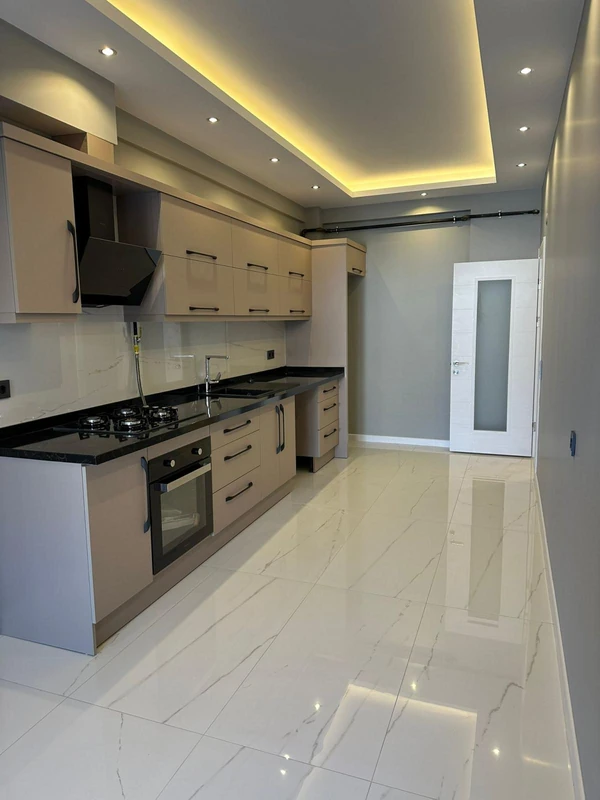
R-MUT-05 · Açık Renk L Mutfak
Model referansı · 1200×1600 px
Açık bej/gri L dolaplar, koyu tezgâh, ankastre ekipmanlar ve sıcak asma tavan ışığı; uzun dar mekân.

R-MUT-06 · Cam Vitrinli Gri Mutfak
Model referansı · 1024×1820 px
Geniş cam üst dolaplar ve içlerinde bitkiler; açık gri alt çekmeceler, mermer arka yüzey ve pencere önü evye.

R-MUT-07 · Pencere Önü L Mutfak
Model referansı · 1536×1024 px
Açık gri düz dolaplar, siyah yatay çizgi, köşede ocak ve büyük pencere önünde evye. Yatay modern mutfak referansı.
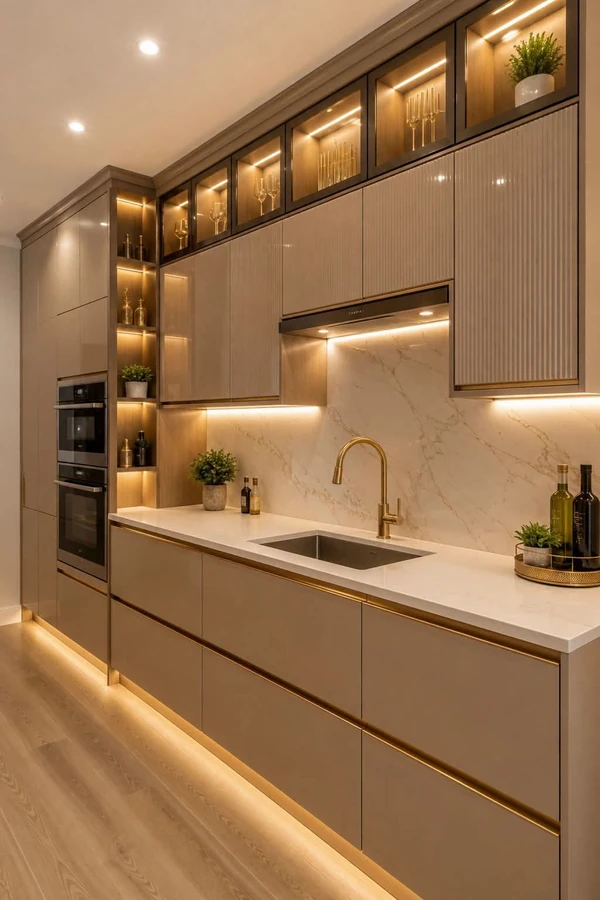
R-MUT-08 · Ahşap Çıtalı Işıklı Mutfak
Model referansı · 1024×1536 px
Ahşap çıtalı üst kapaklar ve cam vitrinler, açık tezgâh ve düz alt çekmeceler; sıcak LED aydınlatma.

R-MUT-09 · Antrasit Mutfak
Model referansı · 1024×1536 px
Koyu/antrasit dolaplar, siyah metro seramik arka yüzey, ışıklı cam vitrinler ve siyah tezgâh; güçlü koyu palet.
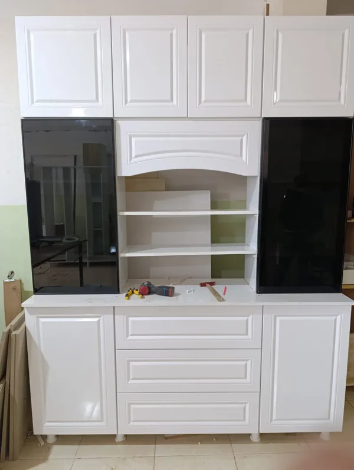
P-KAH-01 · Beyaz Vitrinli Kahve Dolabı
Müşteriden gelen gerçek çekim · 1204×1600 px
Beyaz kapaklı, iki yanı füme camlı vitrinli kahve ve servis dolabı.
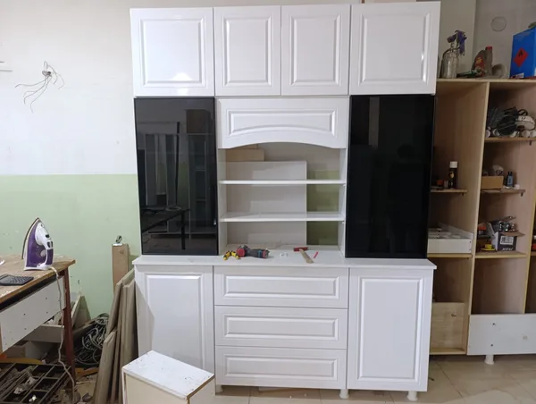
P-KAH-02 · Beyaz Kahve Dolabı, Atölyede
Müşteriden gelen gerçek çekim · 1600×1204 px
Aynı beyaz vitrinli dolabın atölyede montaj öncesi hâli.

R-KAH-01 · Cam Vitrinli Kahve Ünitesi
Model referansı · 3000×3521 px
Mavi alt kapak/çekmeceler, ahşap tezgâh ve siyah çerçeveli sıcak ışıklı üst cam vitrin; ortada kahve ekipmanları.

R-KAH-02 · Gri Country Kahve Dolabı
Model referansı · 2454×3681 px
Gri çerçeveli kapaklar, yüksek yan depolama, orta cam üst dolap ve beyaz tezgâh; ahşap zeminli gerçek iç mekân.

R-KAH-03 · Kemerli Beyaz Kahve Köşesi
Model referansı · 1662×2048 px
Beyaz klasik taç/kemer ve raflar; iki yanda koyu cam vitrin, altta çekmeceler. Cihazsız ürün görünümü.
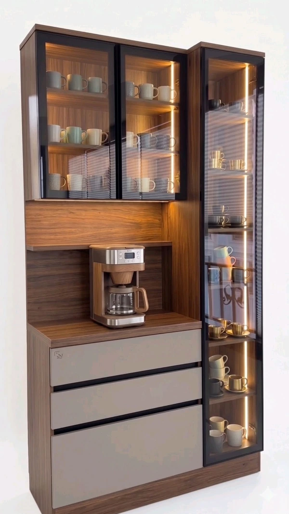
R-KAH-04 · Işıklı Vitrinli Kahve Dolabı
Model referansı · 1200×2133 px
Ahşap gövde ve iç yüzeyler, gri uzun çekmeceler, siyah cam üst dolap ve sağda boy vitrin; beyaz fonlu ürün sahnesi.

R-KAH-05 · Beyaz Country Servis Duvarı
Model referansı · 1920×1280 px
Duvar boyunca beyaz çerçeveli/cam dolaplar, orta kahve tezgâhı ve sağ ankastre kolonu; geniş yatay iç mekân.
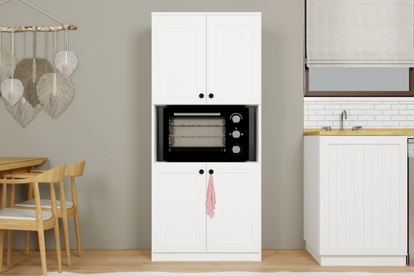
R-KAH-06 · Beyaz Kiler ve Fırın Dolabı
Model referansı · 1920×1280 px
Bağımsız beyaz uzun dolap; ortada siyah fırın/mikrodalga nişi, üst ve altta ikişer kapak. Sade mutfak sahnesi.

R-KAH-07 · Siyah Modüllü Kahve Köşesi
Model referansı · 1350×1800 px
Ahşap boy dolaplar, siyah alt modül ve asimetrik yükselen cam vitrin; pencere yanında kahve ekipmanları.
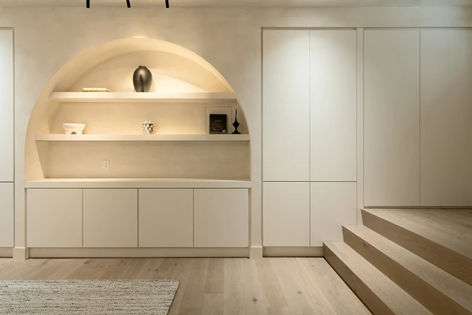
R-KAH-08 · Kemerli Nişli Gömme Ünite
Model referansı · 1800×1200 px
Krem düz kapaklar, sıcak ışıklı kemerli açık raf ve tam boy yan depolama; cihazsız minimal servis/saklama tasarımı.
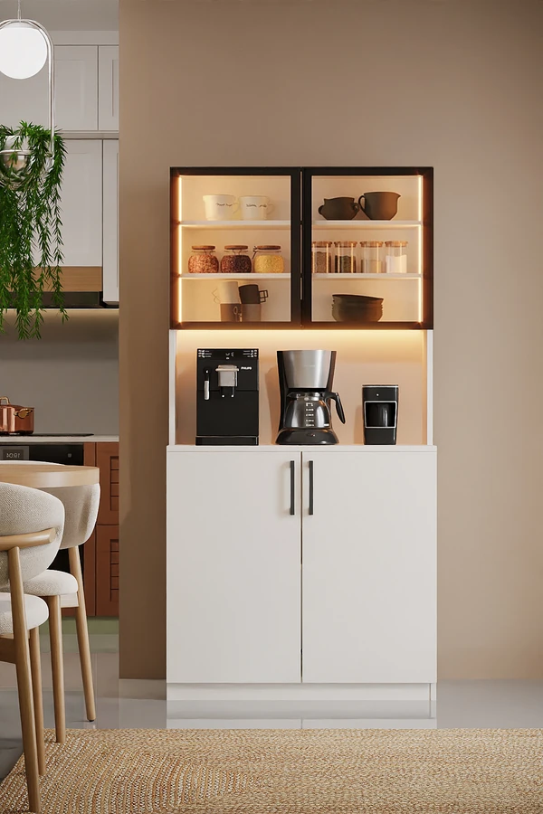
R-KAH-09 · Beyaz Işıklı Kahve Dolabı
Model referansı · 1200×1800 px
Beyaz alt dolap, ahşap çerçeve ve ortada cam kapaklı ışıklı servis bölümü; kahve makineli, sıcak tonlu ürün sahnesi.
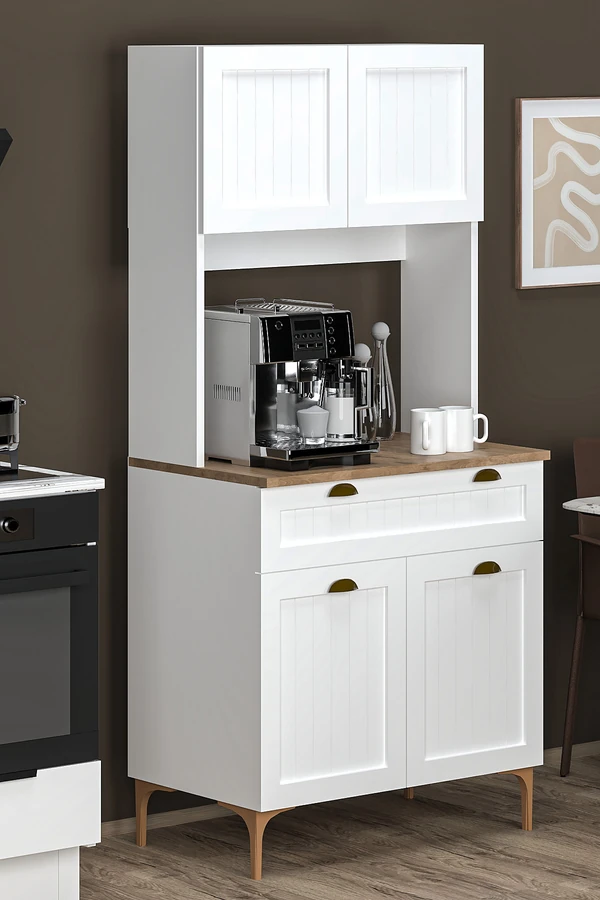
R-KAH-10 · Ayaklı Country Kahve Dolabı
Model referansı · 1200×1800 px
İnce ayaklar, beyaz çerçeveli kapaklar, yarım ay kulplar ve ahşap tezgâh; üstte geniş camlı raf ve kahve makinesi.

R-KAH-11 · Çok Amaçlı Kahve Dolabı
Model referansı · 1200×1800 px
Ahşap yan çerçeve, beyaz kapaklar, açık fincan rafı ve alt fırın bölümü; pencere yanında bağımsız ürün sahnesi.

R-KAH-12 · Asimetrik Kiler Dolabı
Model referansı · 1200×1800 px
Ayaklı beyaz depolama, sol açık raflar ve sağ fırın/mikrodalga nişi; sade modern mutfak ürün sahnesi.
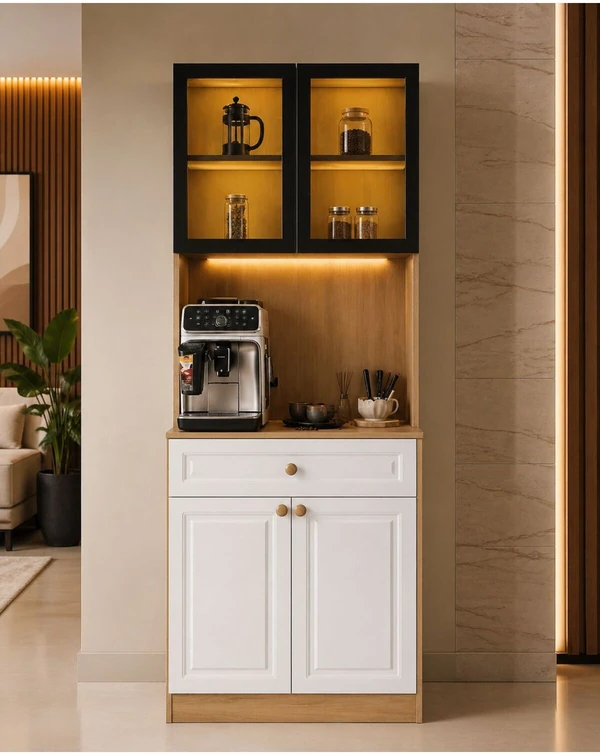
R-KAH-13 · Kompakt Kahve Köşesi
Model referansı · 1200×1509 px
Beyaz country alt kapaklar, ahşap sırt paneli ve siyah cam üst dolap; sıcak LED ve kahve makinesi. Boş dış bantlar kesildi.

R-KAH-14 · Işıklı Kemerli Kahve Köşesi
Model referansı · 1080×1920 px
Kemerli beyaz niş, iki yanda ışıklı cam vitrin, siyah tezgâh ve alt çerçeveli kapaklar; gri zeminli iç mekân.

R-KAH-15 · Bej Kemerli Kahve Ünitesi
Model referansı · 1080×1920 px
Siyah çerçeveli yan cam vitrinler, ışıklı kemerli orta niş, açık raflar ve uzun çekmeceler; sıcak bej tonlar.
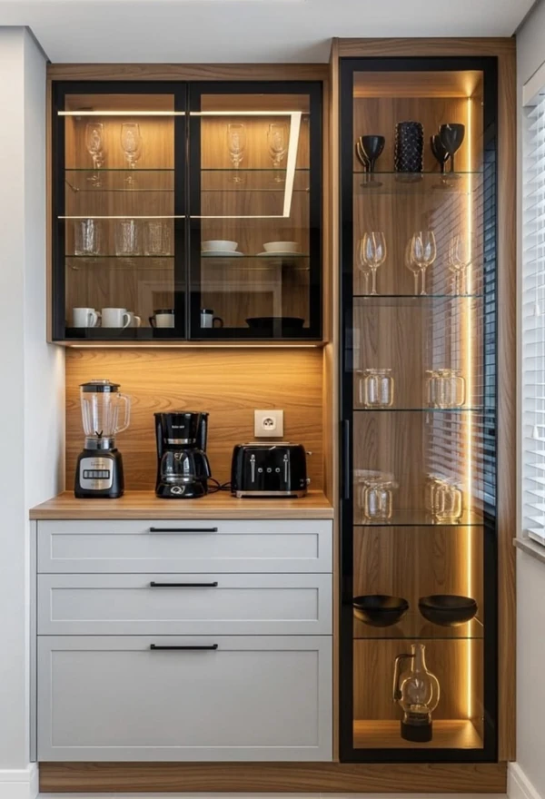
R-KAH-16 · Gri Çekmeceli Kahve Ünitesi
Model referansı · 1142×1674 px
Ahşap arka yüzey, siyah cam üst dolap, sağda boy cam vitrin, gri uzun çekmeceler ve tezgahta ekipmanlar.

R-KAH-17 · Siyah Vitrinli Kahve Ünitesi
Model referansı · 1200×1530 px
İki yanda boy siyah cam vitrin, ortada ahşap niş ve altta beyaz kapaklar. Alt sehpa/dergi alanı kırpılarak yazı kaldırıldı.
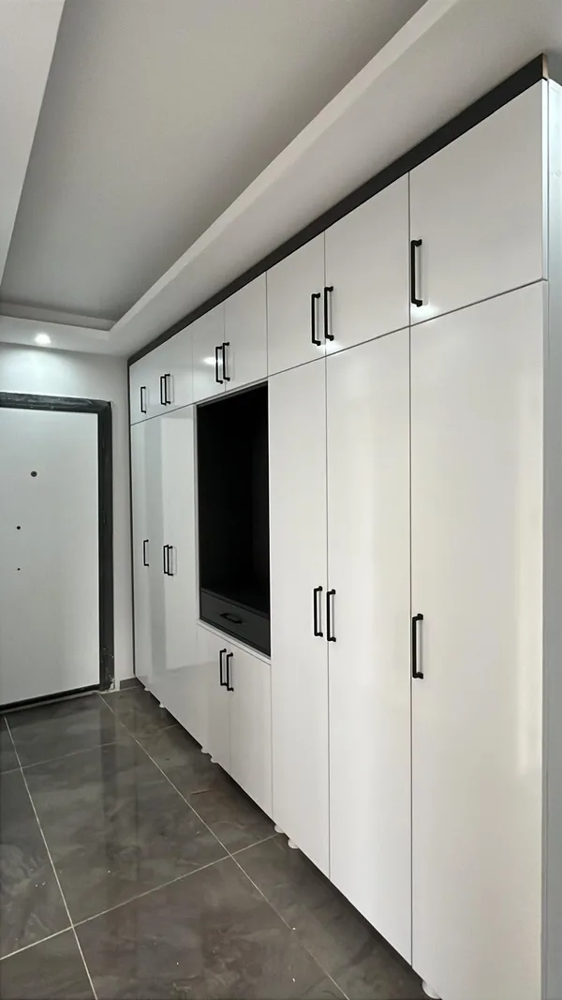
P-GOM-01 · Beyaz Boy Gömme Dolap
Müşteriden gelen gerçek çekim · 900×1600 px
Koridor boyunca tavana kadar beyaz kapaklı gömme dolap.
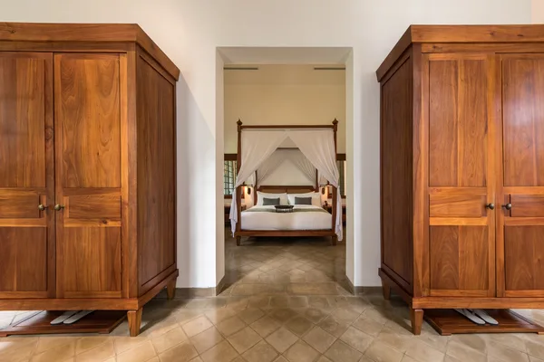
R-GOM-01 · Ahşap Gardırop Takımı
Model referansı · 2400×1600 px
İki ahşap gardırop ve aralarında yatak odası girişi.
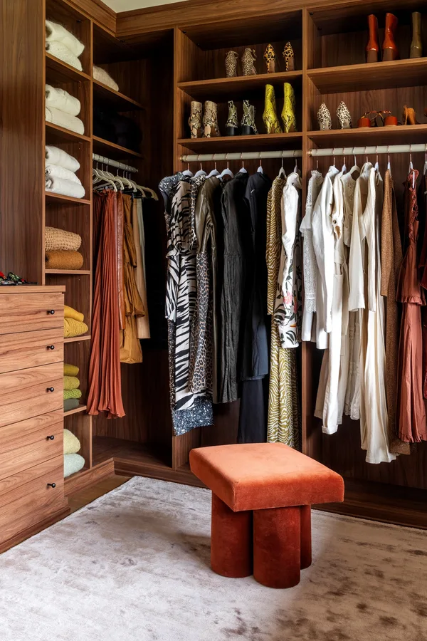
R-GOM-02 · Ahşap Giyinme Odası
Model referansı · 1600×2400 px
Ahşap raflı ve askılı açık giyinme odası.
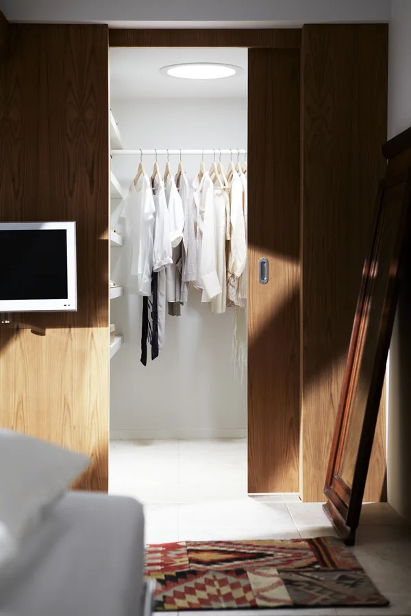
R-GOM-03 · Giyinme Odası Girişi
Model referansı · 1600×2400 px
Koyu ahşap kapılarla ayrılan aydınlık giyinme odası.
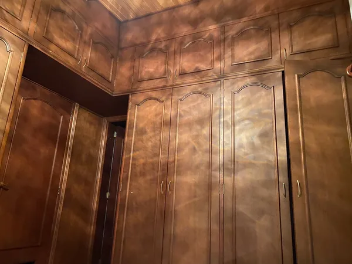
R-GOM-04 · Ahşap Gömme Gardırop
Model referansı · 2400×1800 px
Tavana kadar uzanan, panelli ahşap gömme gardırop.
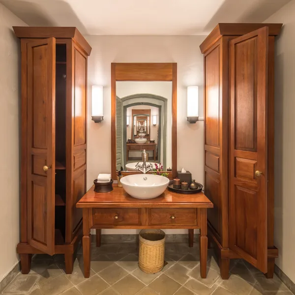
R-GOM-05 · Ahşap Boy Dolaplar
Model referansı · 2400×2400 px
Ayna ve lavabo ünitesinin iki yanında ahşap boy dolaplar.
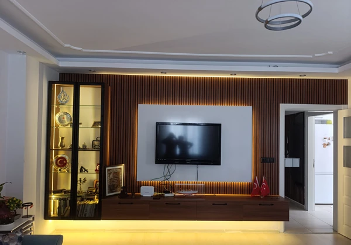
P-TV-01 · Ceviz Çıtalı TV Duvarı
Müşteriden gelen gerçek çekim · 2040×1425 px
Doğrudan çekim: ceviz çıtalı TV duvarı, solda uzun cam vitrin, koyu alt konsol ve sıcak LED. Alt telefon/tarih damgası kırpıldı.
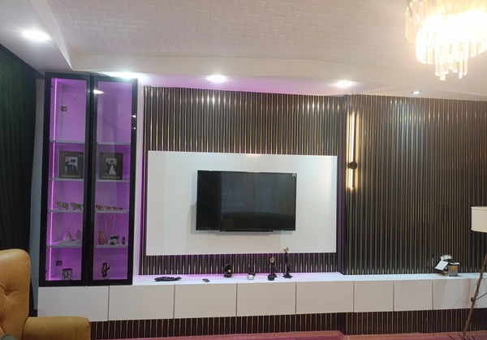
P-TV-02 · Mor LED TV Ünitesi
Müşteriden gelen gerçek çekim · 2040×1425 px
Koyu çıtalı duvar, siyah kapalı TV, beyaz uzun alt konsol ve solda cam vitrin. Alt telefon/tarih damgası kırpıldı.
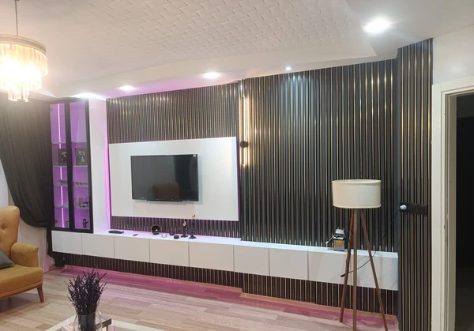
P-TV-03 · Çıtalı TV Duvarı, Salon
Müşteriden gelen gerçek çekim · 2040×1425 px
Aynı TV duvarının daha geniş/yan açısı; sağda ayaklı aydınlatma, zeminde salon ayrıntıları. Alt telefon/tarih damgası kırpıldı.
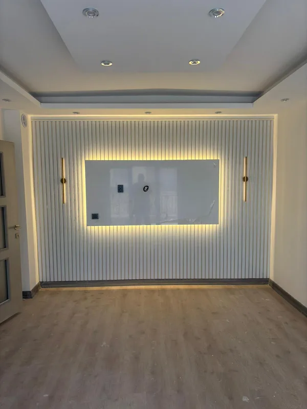
P-TV-05 · LED Çerçeveli TV Duvarı
Müşteriden gelen gerçek çekim · 1200×1600 px
Beyaz çıtalı duvar panelinde LED çerçeveli TV alanı.
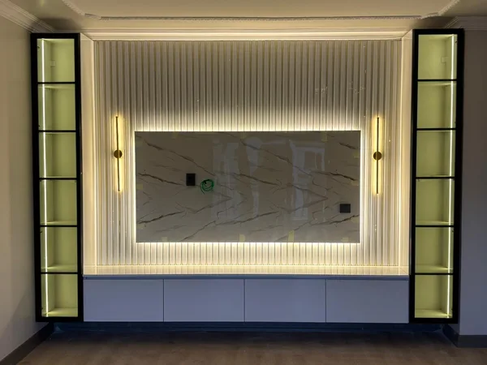
P-TV-06 · Vitrinli LED TV Duvarı
Müşteriden gelen gerçek çekim · 1600×1200 px
İki yanda ışıklı siyah vitrin, ortada LED çerçeveli TV paneli.
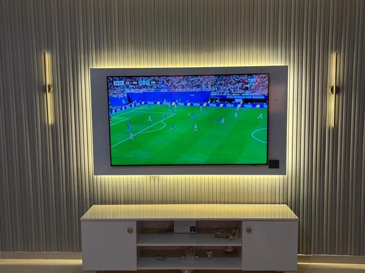
P-TV-07 · Dalgalı Panel LED TV Ünitesi
Müşteriden gelen gerçek çekim · 1600×1200 px
Dalgalı duvar paneli, LED çerçeveli TV ve beyaz alt konsol.
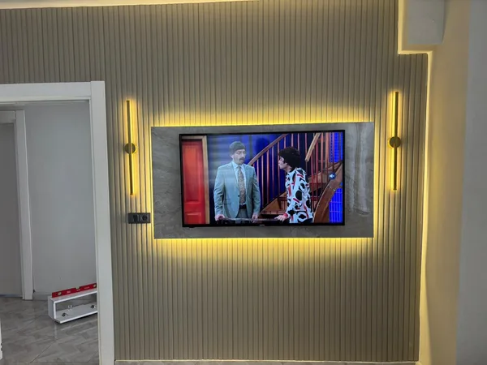
P-TV-08 · Aplikli LED TV Paneli
Müşteriden gelen gerçek çekim · 1600×1200 px
Dalgalı panel üzerinde LED çerçeveli TV ve iki yanda duvar aplikleri.

R-TV-01 · Şömineli Ahşap TV Duvarı
Model referansı · 1036×1647 px
Tam boy açık ahşap panel, sağda siyah TV, solda doğrusal şömine, mermer görünümlü alt baza ve yuvarlak sehpa.
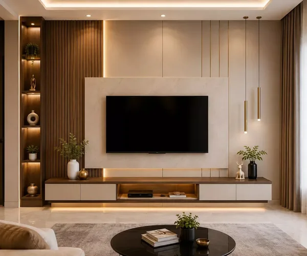
R-TV-02 · Ahşap Çıtalı TV Ünitesi
Model referansı · 1374×1145 px
Ahşap çıtalı panel, ışıklı raflar ve krem TV duvarı.
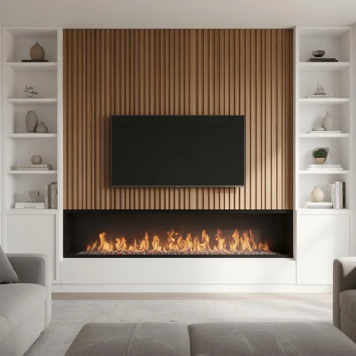
R-TV-03 · Şömineli Çıtalı TV Duvarı
Model referansı · 1024×1024 px
Beyaz raflar arasında ahşap çıtalı TV duvarı ve şömine.
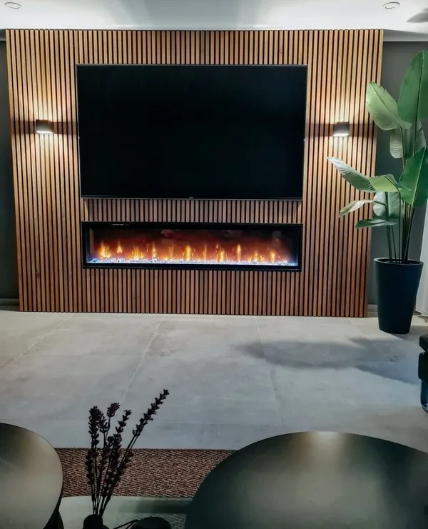
R-TV-04 · Şömineli Ahşap Panel
Model referansı · 972×1200 px
Ahşap çıtalı panelde TV ve altında elektrikli şömine.
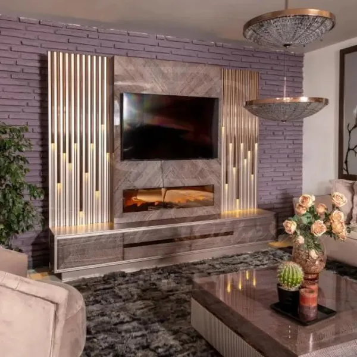
R-TV-05 · Mermer ve LED TV Duvarı
Model referansı · 1080×1080 px
Mermer görünümlü panel, LED çıtalar ve şömineli TV duvarı.
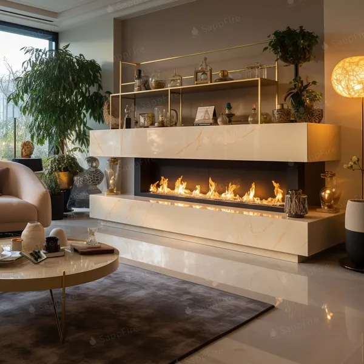
R-TV-06 · Krem Şömineli TV Ünitesi
Model referansı · 1024×1024 px
Krem gövdeli, şömineli ve raflı modern TV ünitesi.
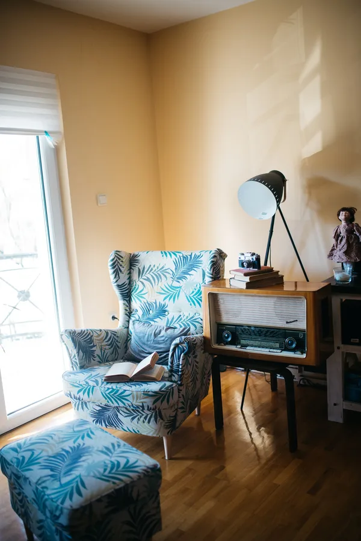
R-BER-01 · Desenli Kulaklı Berjer
Model referansı · 1602×2400 px
Mavi desenli kumaşla kaplı kulaklı berjer ve puf.
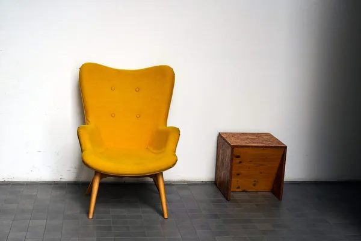
R-BER-02 · Hardal Sarısı Berjer
Model referansı · 2048×1365 px
Ahşap ayaklı, hardal sarısı modern berjer.
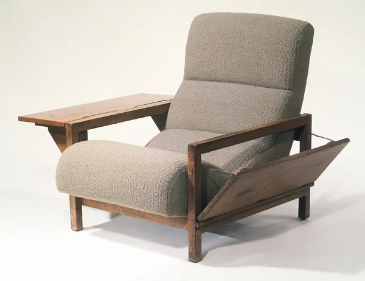
R-BER-03 · Ahşap Kolçaklı Berjer
Model referansı · 1536×1179 px
Ahşap iskeletli, gri kumaş minderli rahat berjer.
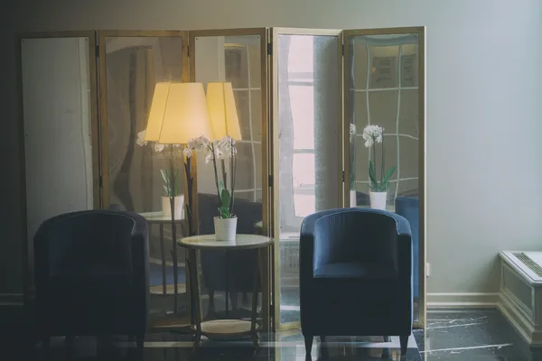
R-BER-04 · Lacivert Berjer Takımı
Model referansı · 2400×1600 px
Lambader ve sehpa eşliğinde iki lacivert berjer.
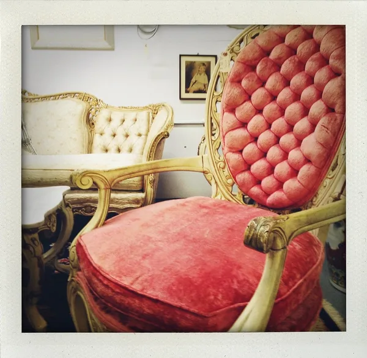
R-BER-05 · Kapitoneli Kırmızı Berjer
Model referansı · 1024×1000 px
Kırmızı kadife kapitoneli, oymalı klasik berjer.
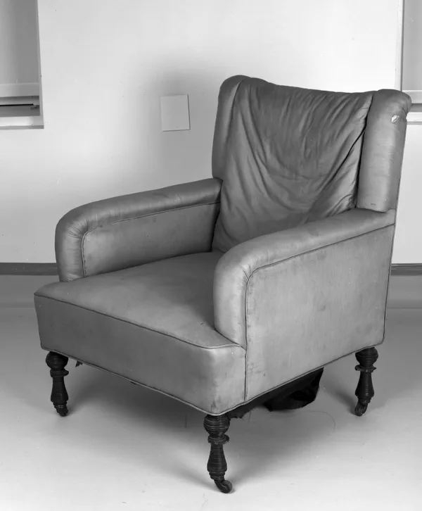
R-BER-06 · Gri Deri Berjer
Model referansı · 1269×1536 px
Ahşap ayaklı, gri deri kaplı berjer.
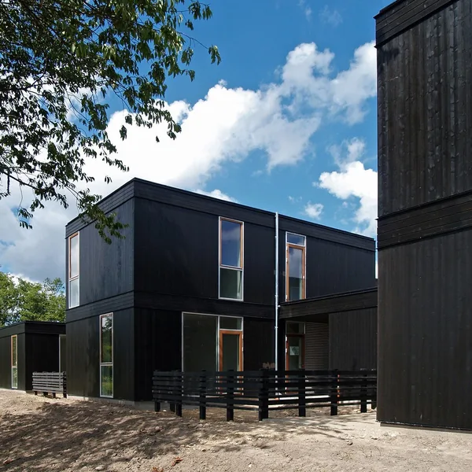
R-PRE-01 · Modern Modüler Ev
Model referansı · 1024×1024 px
Siyah cepheli, iki katlı modern modüler evler.
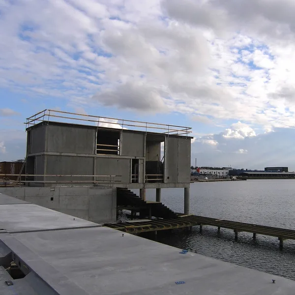
R-PRE-02 · Su Kenarı Modüler Ev
Model referansı · 1024×1024 px
Su kenarında konumlanmış modüler yapı.
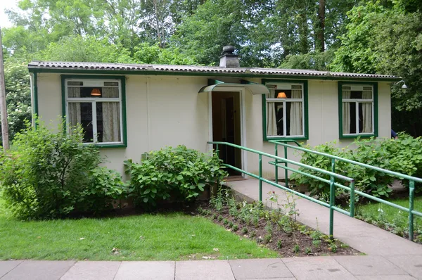
R-PRE-03 · Tek Katlı Prefabrik Ev
Model referansı · 2400×1590 px
Bahçe içinde tek katlı, rampalı prefabrik ev.
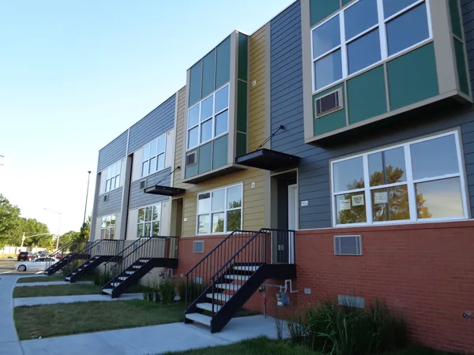
R-PRE-04 · Çok Katlı Modüler Konut
Model referansı · 2400×1800 px
Renkli panel cepheli, çok katlı modüler konutlar.
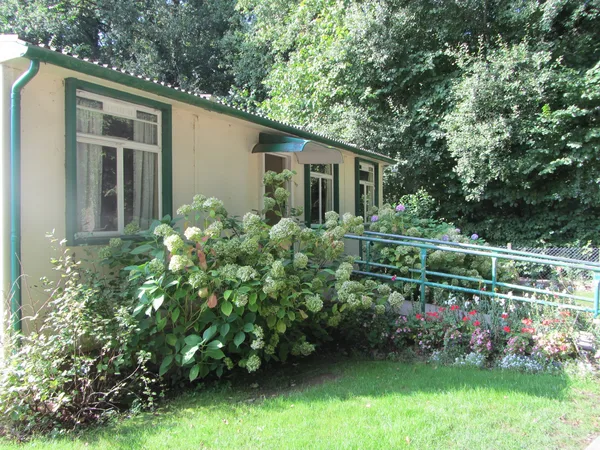
R-PRE-05 · Bahçeli Prefabrik Ev
Model referansı · 2400×1800 px
Yeşillik içinde, krem cepheli prefabrik ev.
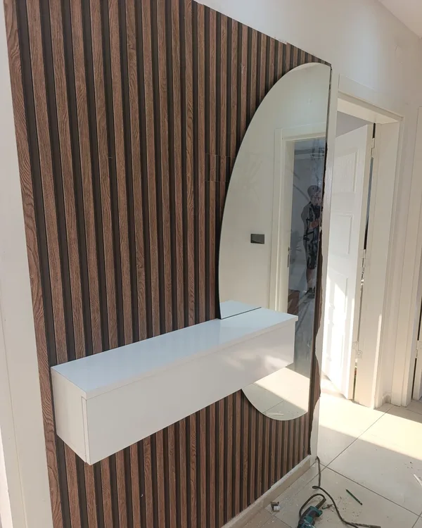
P-ANT-01 · Ahşap Çıtalı Aynalı Antre
Müşteriden gelen gerçek çekim · 1536×1920 px
Ahşap çıtalı duvar paneli, kavisli ayna ve beyaz asma raf.
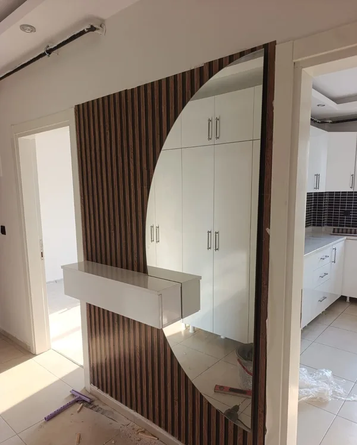
P-ANT-02 · Çıtalı Ayna ve Asma Raf
Müşteriden gelen gerçek çekim · 1204×1500 px
Aynı antrenin yan açısı: kavisli ayna, ahşap çıtalar ve beyaz raf.
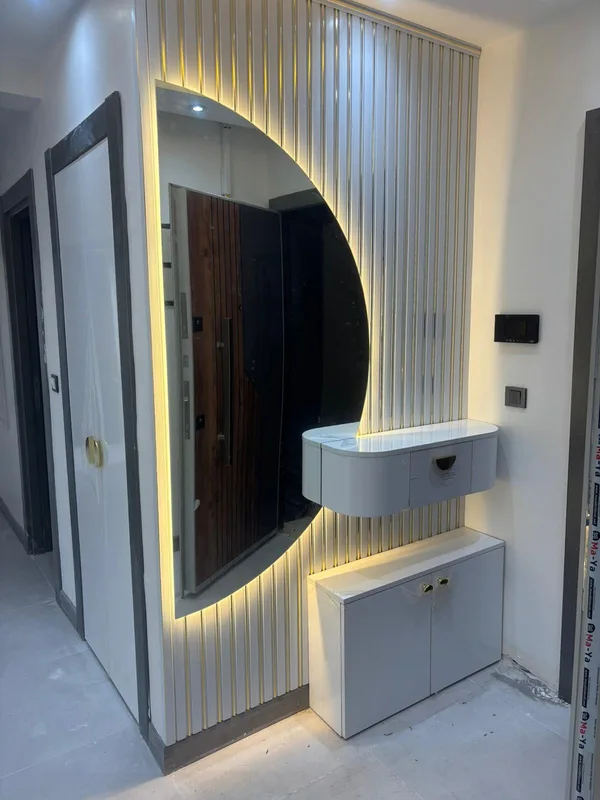
P-ANT-03 · Hilal Aynalı LED Antre
Müşteriden gelen gerçek çekim · 1200×1600 px
Beyaz çıtalı duvarda arkadan aydınlatmalı hilal ayna ve asma dolap.
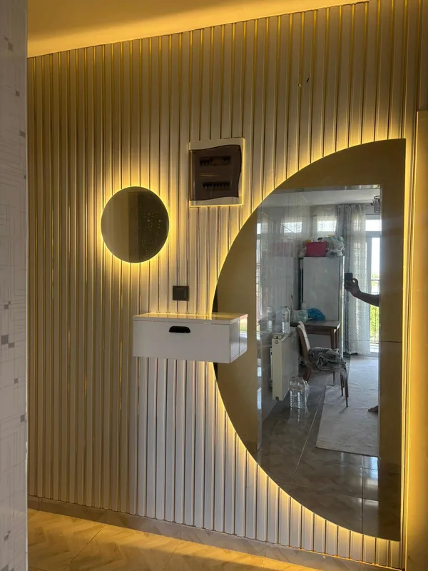
P-ANT-04 · Yarım Ay LED Ayna Duvarı
Müşteriden gelen gerçek çekim · 1200×1600 px
Sıcak LED ışıklı yarım ay ayna, yuvarlak küçük ayna ve asma raf.
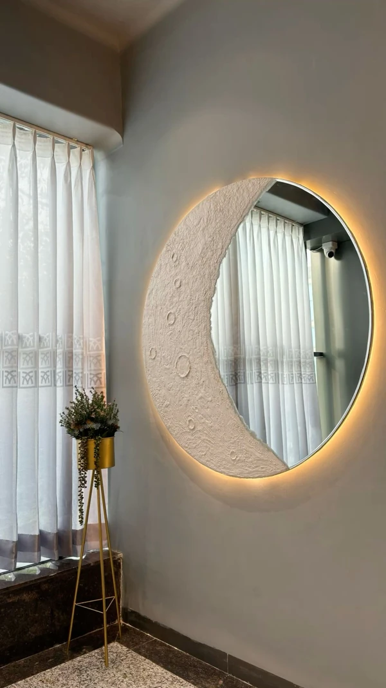
R-ANT-01 · Hilal LED Ayna
Model referansı · 1080×1920 px
Kavisli organik formlu duvar aynası, çevresinde sıcak LED ve solda ayaklı bitki; sade antre/ayna referansı.

R-ANT-02 · Gri Çıtalı LED Ayna Konsol
Model referansı · 1080×1920 px
Gri çıtalı yarım duvar ve asimetrik ayna; önünde tek asma çekmece, kenarlarda sıcak LED. Dikey yakın kompozisyon.

R-ANT-03 · Yuvarlak Ayna ve Siyah Konsol
Model referansı · 1080×1920 px
Duvarın yarısı ahşap çıta, yarısı yuvarlak ayna; siyah asma çekmece ve açık renk puf. Dikey antre görünümü.

R-ANT-04 · LED Aynalı Antre Konsolu
Model referansı · 1224×1632 px
Geniş ayna, gri çıtalı yüzey, mermer görünümlü üst tabla ve iki çekmece; vazolu, sıcak LED aydınlatmalı iç mekân.
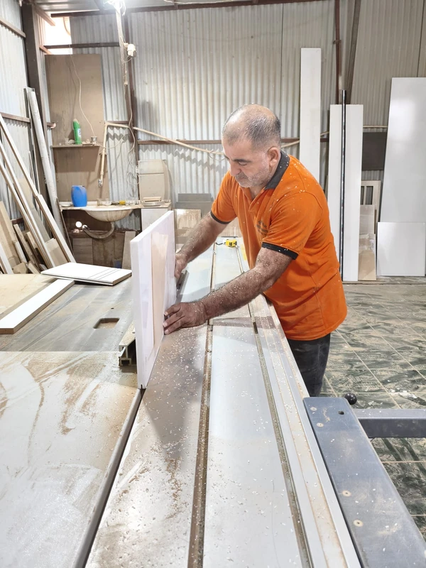
P-ATL-01 · Atölyede Panel Kesimi
Müşteriden gelen gerçek çekim · 1536×2048 px
Turuncu tişörtlü usta, dik beyaz paneli uzun makine tezgâhında işlerken; uzak üç çeyrek açı.
P-ATL-03 · Atölyede Ebatlama
Müşteriden gelen gerçek çekim · 1536×2048 px
Usta, atölyede panel ebatlama makinesinde parça hazırlıyor.

LOGO-01 · Şimşek Mobilya logosu
Marka görseli · 1290×1539 px
Krem zemin, koyu ahşap ev/koltuk işareti, ŞİMŞEK marka yazısı ve iletişim satırı. JPEG; şeffaf değil.